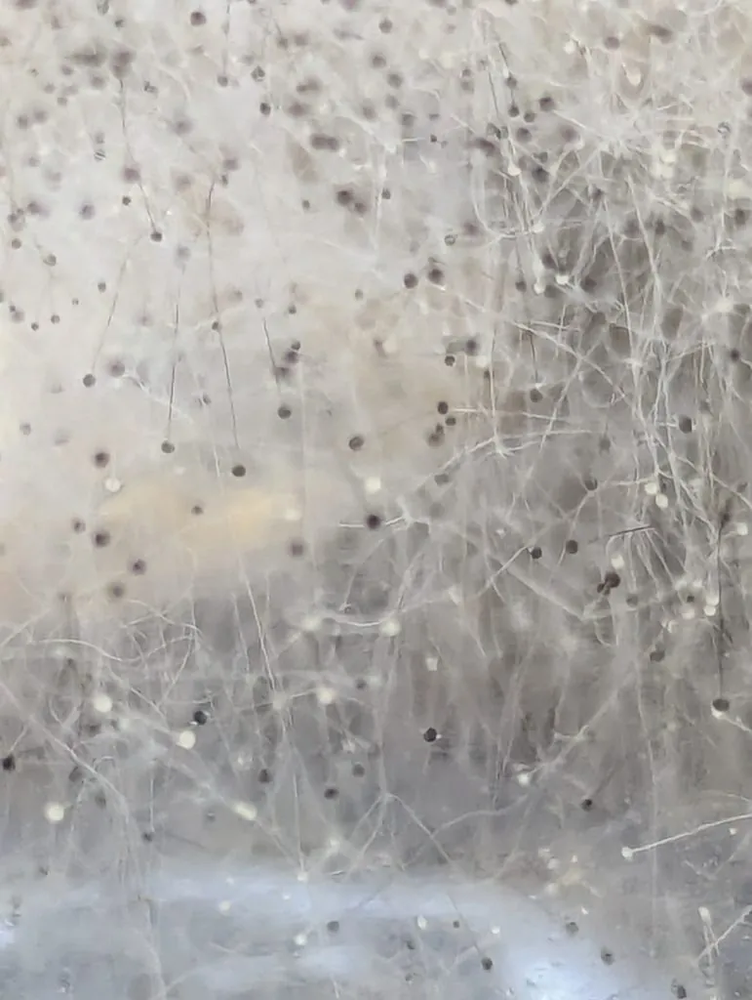

真菌 · 真菌界
米根霉 Rhizopus oryzae

米根霉的菌丝呈白色棉絮状、长出黑色孢子囊，是酒曲和发酵食品的常用菌，也能产生乳酸和富马酸。
- 分类
- 门毛霉门纲毛霉纲目毛霉目科毛霉科属根霉属
- 栖息环境
- 土壤、谷物、酒曲与发酵食品，温暖潮湿处繁殖迅速
- 地理分布
- 世界性分布，亚洲传统发酵食品中常见
- 保护级别
- 暂无评估（工业微生物）
物种志
米根霉是毛霉门毛霉科的真菌，菌丝生长迅速，呈白色棉絮状，向四周蔓延；孢子囊梗直立，顶端膨大形成球形的孢子囊，成熟时孢子囊呈黑色，因此菌落整体呈白色菌丝配黑色小点的外观。它有匍匐菌丝和假根，能在基质表面快速扩展，是常见的霉菌。
米根霉在自然界广泛分布于土壤、谷物和发酵食品中，是酒曲、甜酒酿、腐乳等传统发酵食品的重要菌种。它含有丰富的淀粉酶和糖化酶，能把淀粉分解为糖，因此被用于制曲和酿造；同时，米根霉能产生乳酸、富马酸等有机酸，在工业发酵中用于生产乳酸和富马酸。不过，米根霉也会引起粮食和水果的腐败，部分菌株对免疫力低的人有致病风险，食品防霉仍然重要。
形态与习性
- 菌落白色棉絮状，孢子囊黑色
- 结构有匍匐菌丝和假根
- 产酶淀粉酶与糖化酶
- 用途酒曲、甜酒酿、腐乳发酵
- 工业生产乳酸与富马酸
- 危害可引起粮食与水果腐败
趣味知识
- 米根霉的菌丝是白色棉絮状的，上面长出黑色的小孢子囊。
- 酒曲和甜酒酿的发酵离不开米根霉等霉菌的糖化作用。
- 米根霉能产乳酸和富马酸，是工业发酵的重要菌种。